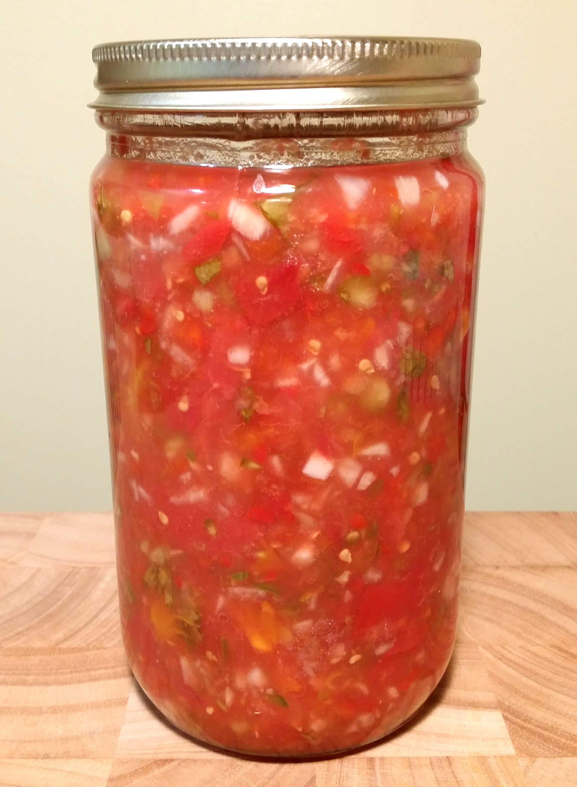

Hjemmelaget Salsa

Beskrivelse
Lyst til å prøve en spennende vri på salsaen? Denne har en ekstra kick og fylde som bare må prøves!
Ingredienser
- 700 g tomater
- 75 g chili
- 25 g hvitløk
- 25 g koriander (kan droppes)
- 75 g løk
- 100 g kål (brukes for å starte fermenteringen)
- 2 lime
- 25 g havsalt (unngå salt med jod, dette fordi jod dreper fermenteringsbakteriene)
Fremgangsmåte
- Skyll tomatene. Skjær dem i 2 cm store terninger.
- Fjern frø fra chili. Finhakk chili, hvitløk og koriander.
- Ha alt i en bolle. Klem saft fra lime over og tilsett salt. Rør sammen til alt er godt blandet.
- La stå i 15 minutter, saltet må få tid til å trekke saften ut av grønnsakene.
- Hell salsa oppi et luftett og rent glass. Pass på å presse tomat- og chilikjøttet godt ned i saften. Pass på at det er 3-4 cm luft øverst i glasset.
- Sett glasset på en tallerken (i tilfelle overbrusing), la stå på et skyggefullt sted på rundt 18 til 20 grader i 3 til 5 dager.
- Åpne glasset hver dag for å lette på trykket.
- Etter 3 dager kan du smake på salsaen. Oppbevares i kjøleskap når ferdig.
Tilbake til forsiden